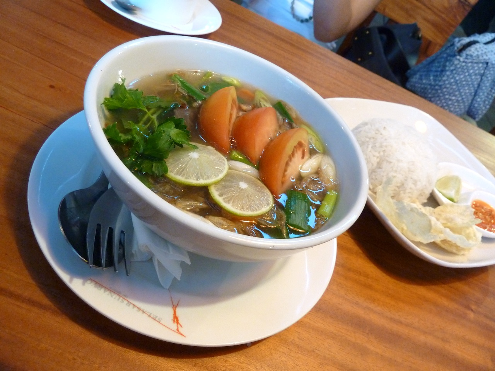

Oxtail Soup

Description
Sop Buntut is a rich Indonesian oxtail soup made by slow-simmering oxtail with aromatic spices and vegetables until the meat is fall-off-the-bone tender and the broth is deeply flavorful. It's a hearty, comforting dish often served with steamed rice or crusty bread.
Ingredients
- 1 kg oxtail, cut into pieces
- 2 liters water
- 2 carrots, cut into chunks
- 2 potatoes, cut into chunks
- 1 tomato, quartered
- 2 stalks celery, chopped
- 2 scallions, chopped
- 4 shallots
- 3 garlic cloves
- 1/2 tsp nutmeg, grated
- 1 tsp white pepper
- 2 tbsp cooking oil
- Salt to taste
- Fried shallots, for garnish
Steps
- Boil the oxtail in water for a few minutes, then discard the water to remove impurities.
- Return the oxtail to the pot with fresh water and bring to a boil, then simmer.
- Blend or crush the shallots and garlic, then sauté in oil until fragrant.
- Add the sautéed aromatics, nutmeg, and white pepper to the simmering oxtail.
- Continue simmering for 2–3 hours until the oxtail is tender.
- Add carrots and potatoes, cooking until softened.
- Add tomato and celery, and season with salt to taste.
- Serve hot, garnished with scallions and fried shallots.
Home